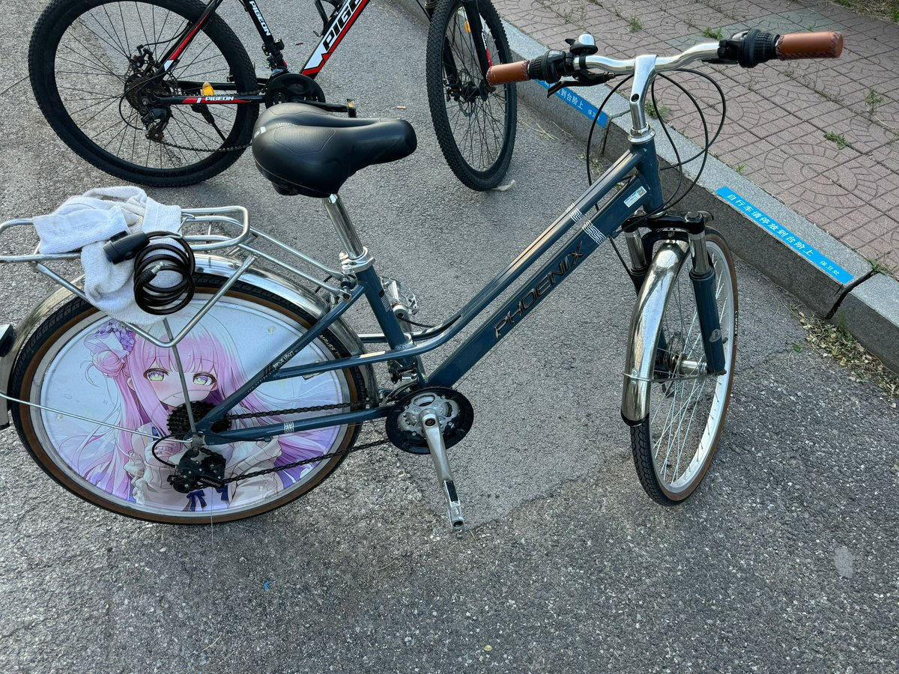

mortis
@0Yowlry
@ldnnO721 🥳

LDNN i 0721_🔞
@ldnnO721
我上个月参加了一个学校和一家企业的3+1计划，作为大学生提前一年进入实习岗位，我很有幸通过了简历初筛和面试，明天签实习合同这周日搬到员工宿舍，下周一上班，这也意味着我的人生进入了一个新的阶段，我今天整理相册，看到了我刚上大学时拍的照片，以及这三年的时光，真的感慨万千，唉，这也代表着 https://t.co/bIkIwfM9eu